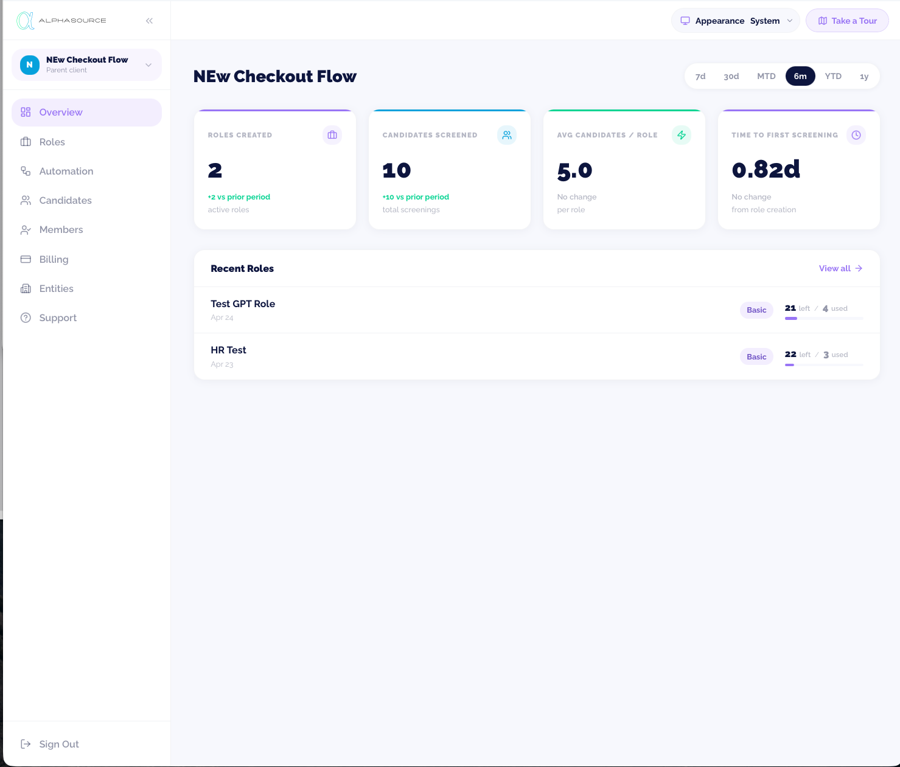
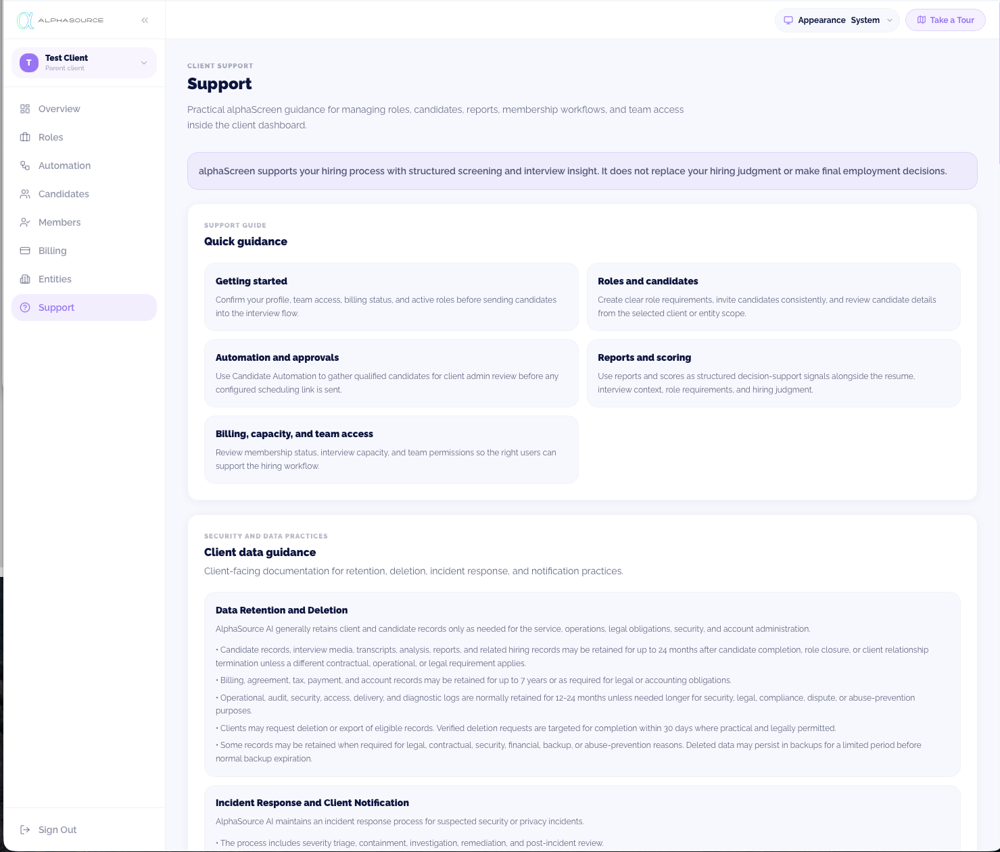
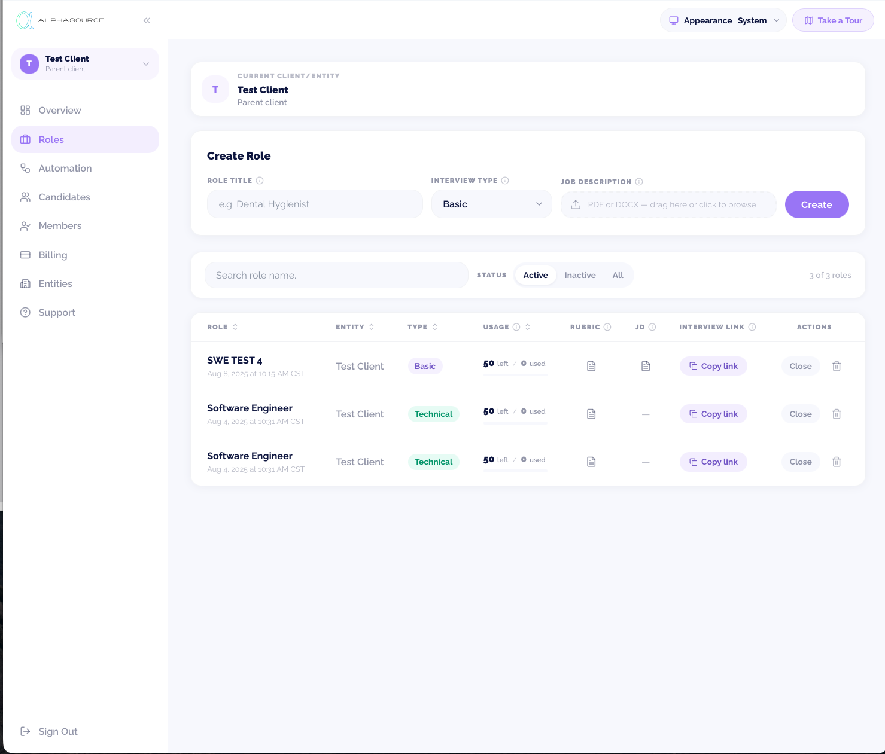
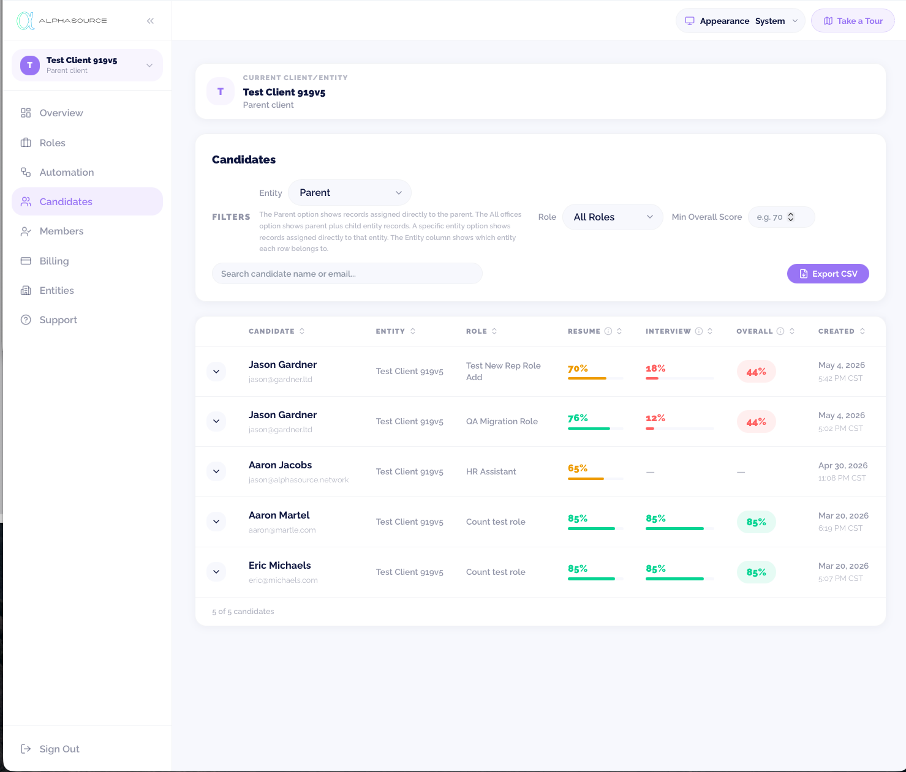
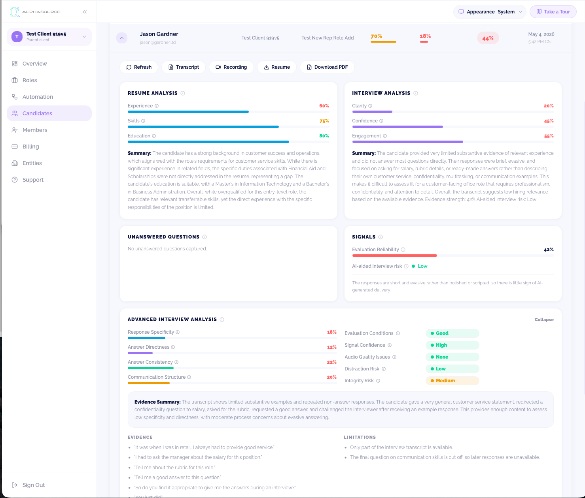
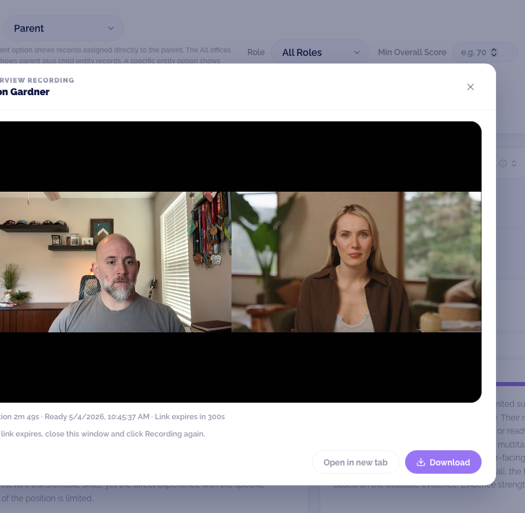
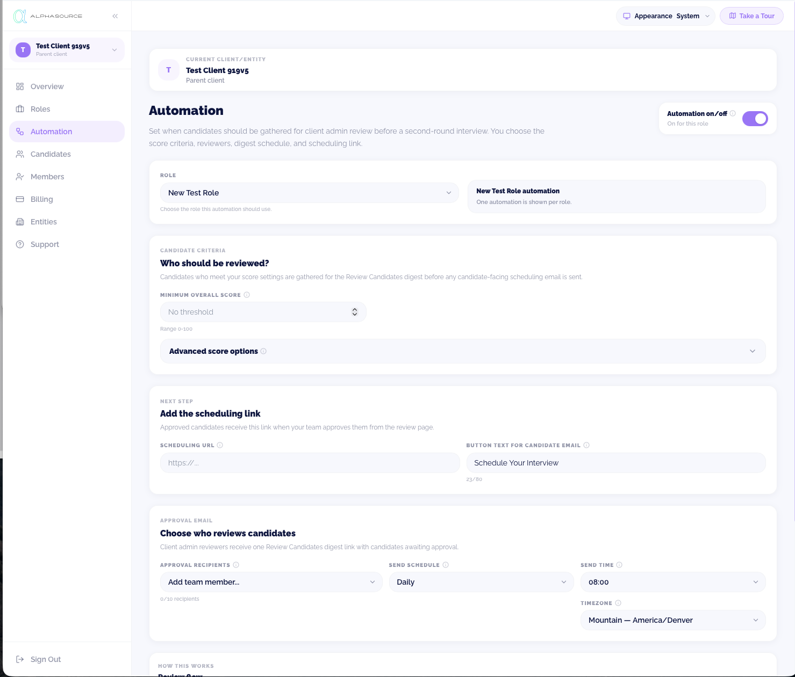
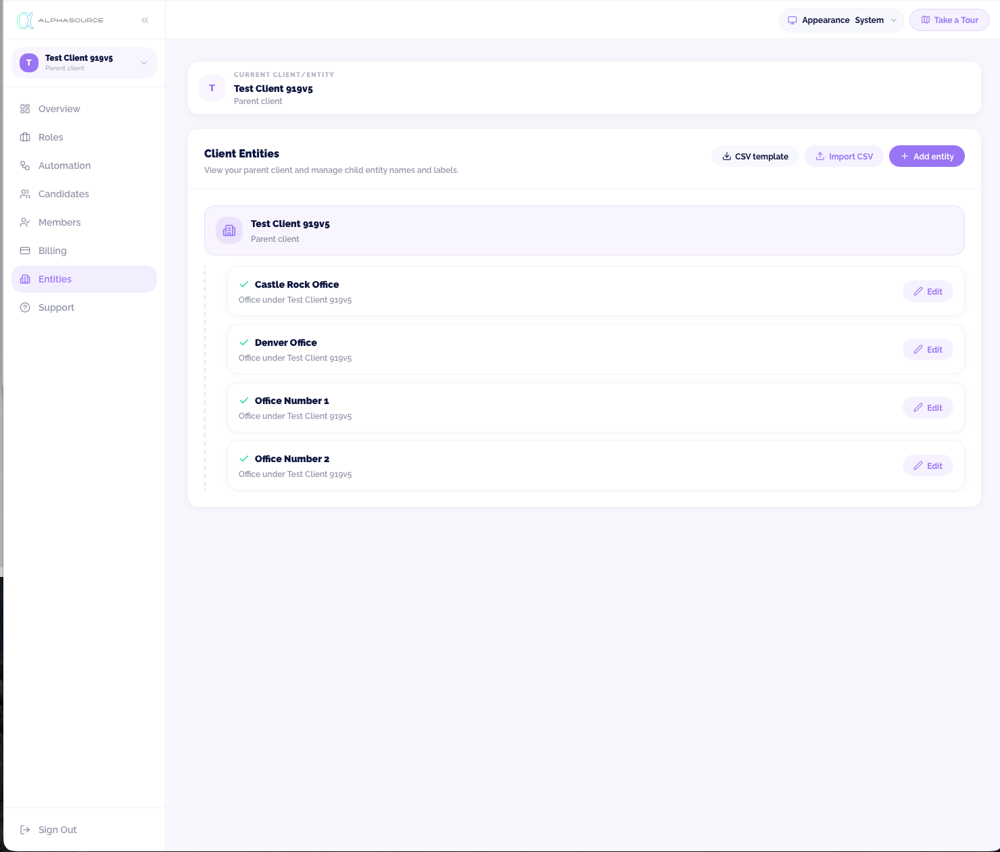
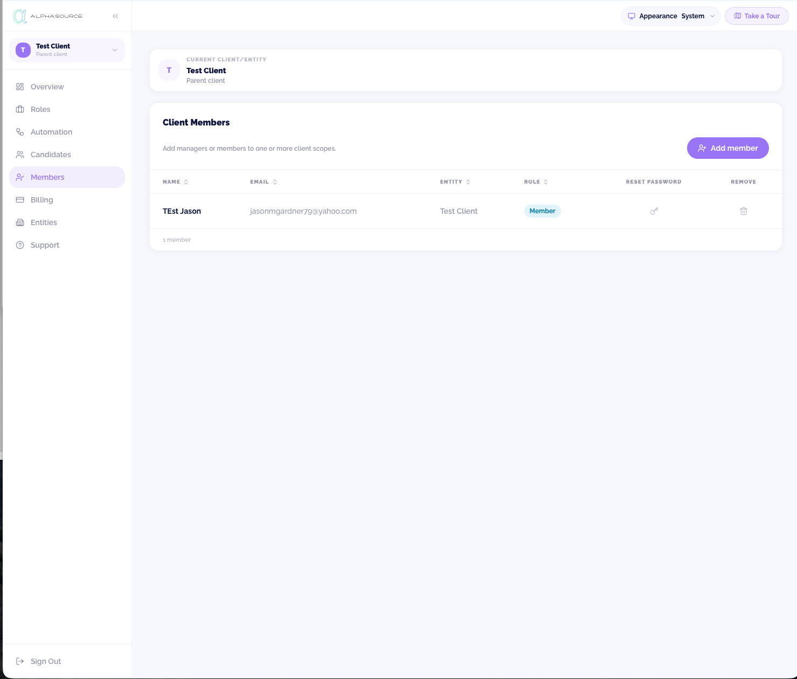

A practical guide for setting up roles, inviting candidates, reviewing screening results, and controlling next-step outreach.
“Each role has a clear link. Every candidate gets a consistent review. Scores are review aids — not hiring decisions.”
alphaScreen supports role setup, screening, review, and approval. The hiring decision itself stays with your team.
alphaScreen gives your hiring team one place to set up roles, screen candidates, review results, and control what happens next.

Create and manage open roles, each with its own candidate link.
One consistent link so every candidate enters screening the same way.
Screening results, scores, and evidence stay together in one place.
Scheduling links go out only after your team approves a candidate.
Scope roles, candidates, and access by entity.

Active work moves left to right. Approval is the gate that controls when a candidate hears back.
Work through these before sharing candidate links with applicants.
Confirm every item above before sharing candidate links with applicants. You can revisit this list any time your setup changes.

Active, inactive, or closed.
Every role has its own clear link.
Know which entity the role belongs to.
Edit, close, reopen, or copy the link where available.
Understand activity by role.
Create and manage candidate links from the role itself. Do not reuse an old link for a different, unrelated opening.
Do not leave a role active once it’s no longer accepting candidates.

Parent, all entities, or one specific entity.
Narrow the list to one open role.
Where each candidate stands in screening and review.
See which entity each candidate belongs to.
Quick scan to help prioritize review.
See how recently a candidate applied.
Use filters first. A focused candidate list is faster and less error-prone than scanning every candidate across every entity.
The candidate list helps prioritize review. Your hiring team still makes the decision.


Two scores feed into one overall view.
Transcript highlights and reviewer notes support the score.
Review the candidate’s recorded responses in the report.
Surfaced for the reviewer, not decided automatically.
| Score | What it tells you |
|---|---|
| Résumé score | How closely the résumé appears to match the role. |
| Screening interview score | How strongly interview responses align with the role criteria. |
| Overall score | Combined review signal for prioritization. |
| Reliability / insufficient content | Flags when there wasn’t enough information for a confident review. |
Scores are review aids. They are not hiring decisions.
A quick look at what the candidate sees — useful context before you review their results.
Candidate receives a link tied to one open role.
Candidate enters basic information and résumé details.
Candidate may complete a video screening interview. A text-based accommodation path may be available.
Responses and résumé information support the reviewer.
Tell candidates the screening interview is part of the first-pass review process and that the hiring team will follow up if they move forward.
Do not over-describe the technology behind the interview, and do not promise a hiring outcome at this stage.

Which candidates match your configured criteria for review.
Creates the Review Candidates list for the hiring team.
The next-step link sent only after a candidate is approved.
No candidate email is sent yet.
The review page shows candidates awaiting approval.
The configured scheduling link is sent to the candidate.
No candidate scheduling email is sent.
| If… | Then… |
|---|---|
| Candidate matches configured criteria | Appears in the review digest; no candidate email yet. |
| Reviewer approves the candidate | The scheduling link is sent. |
| Reviewer rejects / does not approve | No candidate scheduling email is sent. |
| Criteria or rules look wrong | Contact Support — alphaSource can help update, pause, or remove a rule. |
Automation supports review and approval. It does not send a candidate-facing scheduling email on its own, before approval.
Roles, Candidates, and Members can each include an Entity selector — use it to control which records your team sees.


| View selected | What it shows |
|---|---|
| Parent / client name | Records assigned directly to the parent. |
| All entities (e.g., all offices, locations, branches) | Parent plus child entity records. |
| One specific entity | Records assigned directly to that entity. The Entity column shows which entity each row belongs to. |
Members filtering shows direct assignments for the selected entity only. Inherited or effective access is not the same as a direct assignment.
| Situation | Use this alphaScreen area | What to do | Candidate email? |
|---|---|---|---|
| Need to open a new position | Roles | Create or update the role and use its candidate link. | No |
| Candidate completes screening | Candidates | Open the candidate report and review. | No |
| Candidate matches criteria / looks ready | Candidate report / Review Candidates | Approve the next step when ready. | Yes, if approved |
| Candidate should not move forward | Review Candidates / candidate status | Do not approve; follow your team’s communication process. | No, unless your team sends a separate message |
| Need an entity-specific view | Entity selector | Choose parent, all entities, or one specific entity. | No |
| Need to manage access | Members | Assign members to the right entity. | No |
| Need process help | Support | Review guidance or contact alphaSource. | No |
| Situation | What to do |
|---|---|
| Entity import didn’t go as expected | Contact Support before re-importing a large file. |
| Child entity was archived by mistake | Contact Support to restore it. |
| Automation criteria or rules look wrong | Contact Support — alphaSource can help update, pause, or remove the rule. |
| Member doesn’t have the access you expect | Verify their entity assignment and role first, then contact Support if it’s still not resolved. |
| Candidate screening or report issue | Contact Support with the company, role, candidate, approximate time, and a description of the issue. |
Never treat scores as a hiring decision. Never send a scheduling link before your team approves. Never use the wrong entity view when reviewing entity-specific activity.
“Each role has a clear link. Every candidate gets a consistent review. Scores are review aids — not hiring decisions.”
alphaScreen helps hiring teams move faster while keeping candidate review consistent, organized, and approval-controlled.